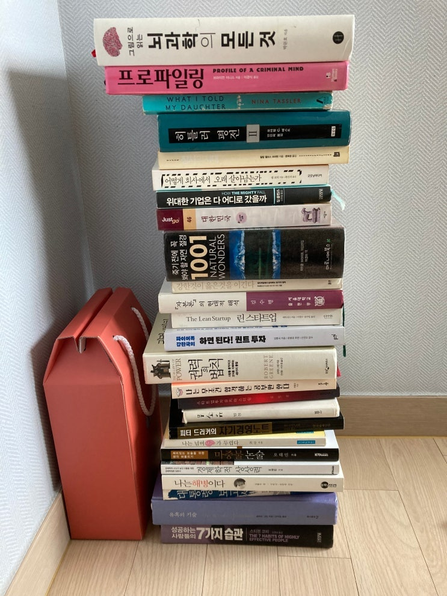
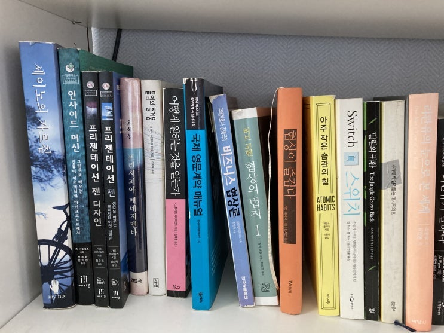
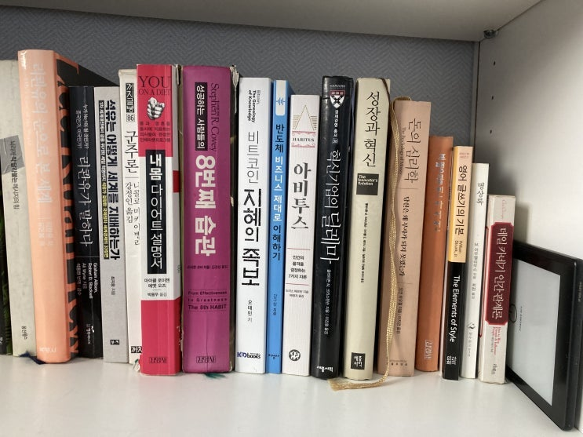
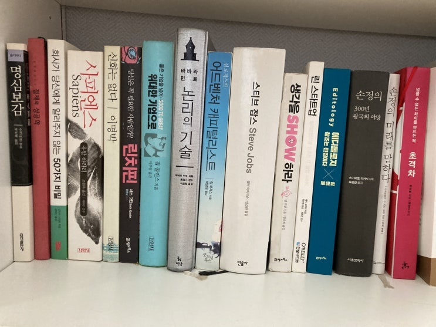
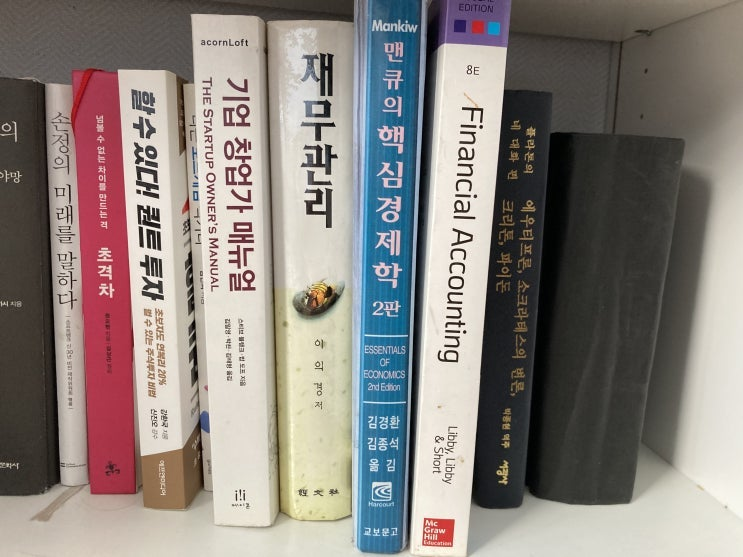
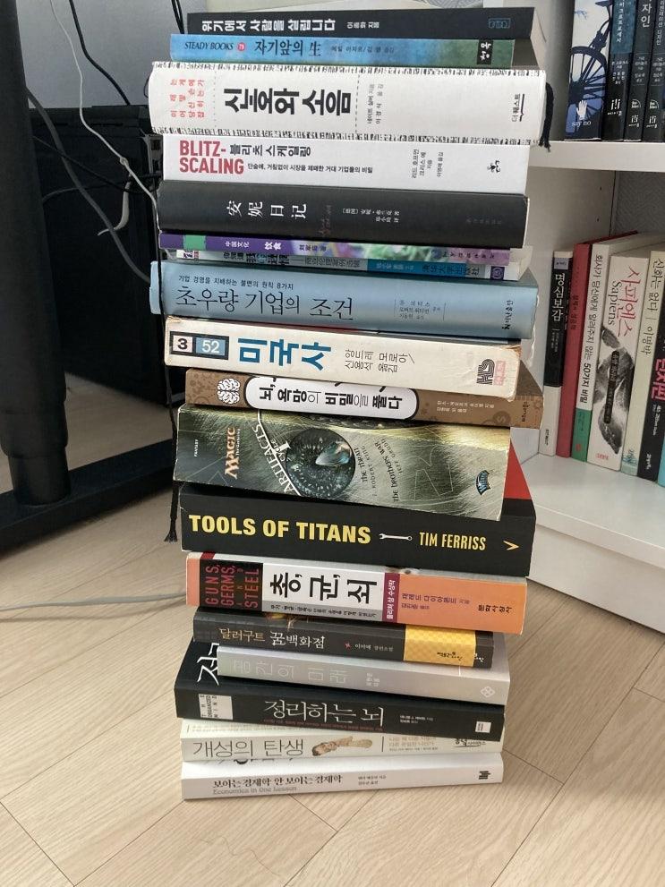
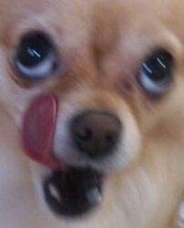

안녕 친구들!
오늘 아조씨는 집에서 책 정리하냐고 너무 빡세네 ㄷㄷ
집에 책이 너무 많아서 정기적으로 책을 버리거나 중고시장에 내다 팔아버리는데 지난 연말에 한번 싹 버렸다가 이번에 다
시 남은 책 중에서 30% 정도를 더 버리기로 했어.
아조씨 집에서 정기적으로 벌어지는 오징어 게임임.
지난해 말에 그래도 나름 좋은 책(?) 들만 남겼다고 생각했는데,
'우리 아이에게 남겨줄 책만 남기자' 라고 생각하니 또 그 중에서 많은 책들이 탈락을 하더라고.
헝거게임 우승자들만을 대상으로 한 파이날 왕중왕전! 지금부터 시작합니다!
집에 있던 책들 : 뭐라고 이 새퀴야?

그간의 우승자들을 대상으로 한, 75주년 특별 헝거게임을 시작하겠습니다!
오늘은 이렇게 선발된 아조씨의 책들과 탈락한 책들에 대해서 한번 포스팅 해볼까 해.
그롬 우리 이번 시즌에 탈락한 책 부터 봐볼까? ㅋㅋㅋ

나름 괜찮은 책인것 같아서 지난해 정리할 때 안버리고 가지고 있다가 이번 엄격한 심사에 걸려서 탈락하는 친구들.
애들 책이 너무 많아져서 내 책을 둘 때가 없음.
아래는 책 제목과 탈락 사유.
제목
탈락사유
그림으로 읽는 뇌과학의 모든것
해부학적 지식 설명인데 이 아조씨는 이거 왜 읽는지 잘 모르겠음. ㅋㅋㅋㅋ
(저자가 서명도 직접 해주셨는데, 내용은 의학도가 봐야 할 듯)
프로파일링
너무 잔인함, 아이들 사상에 좋지 않아보임.
WHAT I TOLD MY DAUTHER
재미없음
히틀러평전(2)
(1)을 못구함 ㄷㄷㄷ
(1) 구하면 버리지 않을까 생각중.
※(1) 가지고 계신 분 저한테 좀 파시오 ㅠㅠ
장사의 시대
배울만한 내용없음
어떻게 회사에서 오래 살아남는가
배울만한 내용없음
위대한 기업은 다 어디로 갔을까
전작의 명성에 기댄 후일담.
배울만한 내용없음
대한민국 JUST GO
정보가 너무 오래됨.
왠간한데 다 가봄.
죽기전에 꼭 봐야할 자연 절경
정보가 너무 오래됨.
강한것이 옳은 것을 이긴다.
정보가 너무 오래됨.
아직도 DJ, 이회창 이야기하는 건 좀. ㅋㅋ
자본론의 현대적 해석.
맑시즘은 이제 해석할 필요가 없어 보임.
린스타트업
정보가 너무 오래됨
하면된다! 퀀트 투자!
할수있다 퀀트투자랑 뭐가 다른지 잘 모르겠음.
할수있다 퀀트투자는 살아남은 책에 포함됨.
권력의 법칙
두 번 읽어봤는데 나랑 좀 안맞음. 너무 방대하여서 책이 초점이 안맞음.
뭔 소리 하고 싶은건지 잘 모르겠음.
나는 무조건 합격하는 공부만 한다
지난번에 버렸어야 했는데 깜빡했음
스타트업투자 마스터링
정보가 너무 오래됨
무소유
좋은 책이긴 한데 아이들에게 남기고 싶은 사상은 아님.
이런 내용은 강요하기 보다는 아이들이 스스로 찾아냈으면 함.
아조씨는 이 책 20년만에 버리는거임 (2002년에 구입)
피터 드러커의 자기경영노트
진부함. 너무 오래됨.
나는 넘버 쓰리가 두렵다
20년전에 선물 받고 계속 읽으려고 시도했는데 너무 재미없어서 실패.
이젠 놓아주어야 할 때...
마중물 논술
청소년용 논술 실력 향상용. 문제는 아조씨가 청소년이 아님.
경제학적 상상력
멘큐의 핵심 경제학이 살아남은 책으로 선정됨.
멘큐랑 중복되서 탈락.
나는해병이다
사모님께서 현빈 좋아하셔서 산책.
얼마전 현빈 결혼했으니 아웃.
손예진!고맙다!
대통령 보고서
이제 내가 더 잘씀
유혹의 기술
나랑 잘 안맞음.
로버트그린책이 나이들고 다시 읽어보니 전쟁의 기술 빼곤 다 별로인듯.
성공하는 사람들의 7가지 습관
스티븐코비옹의 8번째 습관이 살아남은 책에 선정됨.
다들 책 추천사만 보다가 탈락한 애들 보니까 좀 신선하제? ㅋㅋㅋㅋㅋ
헝거게임이 원래 이래서 잼있는거여~
여기 뽑히신 책들은 우선 중고서점에 권당 1000원 정도에 판매되고, 남은 애들은 당근으로 팔리고 그래도 안팔린 애들은
수요일 분리수거하는 날 집을 떠나게 됩니다. 안뇽!
자 그렇다면 이제 누가 살아남았는지 한번 봐볼까?
꿍자락짝짝 꿍짝꿍짝~~~~~
아래 책들은 내가 자식들에게 꼭 읽히고 싶은 책들이야. (총 4장의 사진)
아래에 위 처럼 제목과 선정 사유를 적어보았어.

제목
선정사유
세이노의 가르침
세상 살아가면서 알아야 할 내용들이 가득 담김.
세이노가 진짜건 가짜건 이 책 내용은 진짜다.
인사이드 머신
컴퓨터 어떻게 돌아가는지 설명 잘 나옴
프리젠테이션 젠 (+젠 디자인)
효과적인 시각 자료를 만들어서 어떻게 잘 전달할 것인지 잘 고찰되어 있음
프린시피아 매네지멘타
경영학의 보석과 같은 지식들. 경영을 가치/비용/가격의 관점에서 보게 됨
몰입의 즐거움
학습능력, 창의력을 극대화 하는 몰입에 대한 고민이 잘 나옴
어떻게 원하는 것을 얻는가
협상 마인드셋 관련 바이블
국제 영문계약 매뉴얼
계약 실무 공부를 위한 훌륭한 기초서
비즈니스 협상론
협상 기법에 대한 실례가 잘 나옴
협상의 법칙
협상 마인드셋 관련 바이블 2
협상이 즐겁다
실제로 어떻게 협상해야 하는지 잘 설명해줌.
아주 작은 습관의 힘
훌륭한 습관을 세우는데 도움이 됨
스위치
조직/개인 행동 변화 관련 유용한 팁이 많음.
밀림의 귀환
지금 우리 사는 세상이 어떻게 만들어진 것인지 투명하게 보여주는 책
스틱
재미있고 기억에 남는 글을 쓰기위한 핵심 내용이 잘 기술됨

제목
선정사유
리콴유의 눈으로 본 세계
리콴유가 말하다
중국과 미국의 대결에 대해서 냉철하게 바라보는 리콴유의 관점을 배울 수 있음.
석유는 어떻게 세계를 지배하는가
세상에서 가장 중요한 에너지인 석유 관련 국제 정치학에 대한 역사가 잘 정리되어
있음
군주론
정치, 리더십 관련 고전
내몸 다이어트 설명서
다이어트 관련 건강 지식이 잘 나옴.
나는 실패했지만 너희들은 꼭 성공하거라. ㅠㅠ
8번째 습관
자기개발, 리더십 분야의 고전. 바이블.
비트코인 지혜의 족보
비트코인을 인문학으로 설명하는 바이블.
[주의]
작가가 나중에 알트코인 창시해서 다음 시즌에서 폐기처분한 책임.
반도체 비즈니스 제대로 이해하기
반도체 설계부터 생산 유통까지 실무자의 눈으로 제대로 설명해줌. 매우 실용적.
아비투스
자신이 어느 계급에 속해져 있는지 깨우침을 줌
혁신 기업의 딜레마
성장과 혁신
산업에서 늘상 일어나는 창조적 파괴에 대한 이론 정립이 훌륭하게 되어있음.
돈의 심리학
이것저것 내용이 많아서 애들이 알아서 뭐 하나 건질 가능성이 높아보임.
프랭클린 자서전
자기개발 관련 고전.
영어 글쓰기의 기본
영어 문법 향상. 영어 문장을 잘 쓰는 방법 제시. 실용서.
명상록
여러가지 생각을 하게 해주는 고전.
데일카네기 인간관계론
자기개발, 처세술 관련 바이블.

제목
선정사유
명심보감
자기개발, 처세술 관련 고전
절제의 성공학
밥을 적게 먹어야 하는 이유를 알려줌
(밥을 많이 먹으면 뒤진다고 함, 나는 빨리 죽을 것 같음)
러시아 엘프 형수님을 모셔온 우리 형님이 아조씨 사회 생활 시작할 때 주신 선물로
언제나 소중하게 간직하고 연말/연초에 한 번씩 읽는 책.
회사가 당신에게 알려주지 않는 50
가지 비밀
회사의 인사팀이 가진 비밀을 낱낱이 까발리는 아주 현실적인 책.
회사에서 잘 자라고 싶으면 비전 같은 개소리 하지 말고 이 책 두번 읽어라.
사피엔스
썰도 혼을 담아서 풀면 엄청나게 재미있을 수 있다
는걸 알게 됨.
저자는 본인이 한번도 본적 없는 (본인 뿐만 아니라 인류 그 누구도) 인류 역사 전반
에 대해서 엄청나게 큰 관점에서 상상을 섞어서 계속 썰을 품.
SF와 역사책의 경계쯤에 있는 다빈치 코드 같은 책
이것도 참 대단한 능력임.
신화는 없다
대한민국에서 가장 성공한 사노비의 자서전.
대감님께 사랑받는 과정부터 나중에 어떻게 대감님을 밟고 올라가는지 전반적인 과
정이 잘 나옴.
사노비의 귀감.
린치핀
린치핀 개념에 대해서 잘 정립함.
좋은 기업을 넘어 위대한 기업으로
경영학 고전. 리더십 관련 고전.
매우 훌륭한 컨셉들에 대해서 훌륭하게 설명. 바이블.
논리의 기술
글을 어떻게 구성해야 사람들이 잘 이해하는지 잘 설명함.
어드벤처 캐피털리스트
투자는 이렇게 해야 한다는 것을 보여주시는 짐로저스 성님의 이야기.
스티브 잡스
한 시대를 바꾸어 놓은 천재이자 광인의 삶을 제대로 묘사함.
스티브 잡스에 대해 앱등이 들이 가지는 환상을 모조리 깨줌.
아조씨도 앱등이다 친구들 ㅋㅋㅋ
생각을 쇼하라
그림으로 글을 간단히 설명하는 기가막힌 방법.
매우 실용적임.
린 스타트업
린 스타트업 관련 실용적인 부분만 빼낸 책. 참고용.
에디톨로지
아조씨가 김정운 좋아함. 김정운한테 직접 받았음.
손정의 300년 왕국의 야망
과장이 좀 섞여있는 듯 하지만 흥미진진함.
미친놈들이 어떻게 세상을 바꾸는지 잘 묘사함.
손정의 미래를 말하다
아주아주 긴 계획에 대해서 다룬 책. 영감을 얻기 좋음.
초격차
한국의 위대한 기업가 권오현이 직접 쓴 책.
기업 경영 관심 있다면 읽어라 꼭 세번 읽어라.
권오현님 자체가 잘 나대는 스타일이 아니라서 (단계5의 리더) 유명하지 않은 편인
데, 한국에 이보다 위대한 기업가는 이건희, 정주영 정도밖에 없는 듯.

제목
선정사유
할수있다 퀀트투자
퀀트투자에 대해서 잘 설명함.
나는 보드게임 작가다
옛날 룸메가 쓴 책
기업 창업가 매뉴얼
아들 딸 혹시 스타트업 하면 참고하라고 남겨둠
재무관리
숫자 관련 내용 잘 정리됨
맨큐의 핵심 경제학
기초 경제학 관련 내용 잘 정리됨
Financial accounting
기초 회계 관련 내용 잘 정리됨
플라톤의 네 대화 편
생각하는 법 관련 고전.
(사진엔 없음)제목
선정사유
제로 투 원
매우 훌륭. 세상을 바꾸는 기술 기업에 대한 이야기. 경험담 훌륭.
전쟁의 기술
로버트 그린의 역작. 전략 개념에 대해서 사례와 함께 훌륭하게 기술.
기타 소설들
재미있어서. 따로 명시하진 않겠음.
살아남은 친구들은 여기까지 잘 소개한 듯 하고,
이제 연옥에 있는 놈들을 알아보자 ㅋㅋㅋㅋㅋ
아직 안읽어서 읽은 다음에 살지 죽을지를 결정하고자 함.

(사진엔 없음)제목
선정사유
제로 투 원
매우 훌륭. 세상을 바꾸는 기술 기업에 대한 이야기. 경험담 훌륭.
전쟁의 기술
로버트 그린의 역작. 전략 개념에 대해서 사례와 함께 훌륭하게 기술.
기타 소설들
재미있어서. 따로 명시하진 않겠음.
블리츠 스케일링
아조씨가 코로나 사태때 시장 붕괴할 때 뛰어들면서 결성한 투자 3인회 중 한사람이
추천해 줌
(그 친구는 테슬라를 200달러일 때 삼 - 최근 1:5 분할 하기 전 가격)
안네의 일기 ????
쉬운 중국어 공부나 할까 해서 샀는데 잘 안읽히네 ;;;;;
음식 ??
중국어 공부용으로 산건데, 교양 지식 쌓기가 참 어렵다. ㅋㅋ
초우량 기업의 조건
추천 받았는데 내용이 너무 중후장대한 듯 하여 4년째 안읽고 있는 중
미국사
예전 그룹장님이 추천해주신 책
잼있긴 한데 너무 글씨가 작고 빡세다.
뇌, 욕망의 비밀을 풀다
우리 회사 임원 한 사람이 추천한 책
중간쯤 읽었는데 내용 별로인 듯.
MTG: Artifacts cycle
취미 관련된 소설. 아 근대 역시 원서는 힘들다 ㄷㄷ
Tools of Titans
한국어판 읽고 나서 좋았어서 원서도 삼. 아 근대 원서라 진도 잘 안나가네.
총, 균, 쇠
하도 사람들이 추천해서 사봄.
초반에 읽다가 너무 작가의 썰(?) 풀기가 심한듯 하여 5년째 안읽어봄.
이건 뭐 거의 유사과학 급 ㄷㄷㄷㄷ ㅋㅋㅋㅋㅋㅋ
그런데 너무 좋은 책이라고 사람들이 강추를 해서 못 버리고 있음.
달러구트 꿈 백화점
선물 받음
공간의 미래
선물 받음
정리하는 뇌
유명 유투버가 클루지랑 같이 추천했던 책인데 중간까지 읽어봤는데 아직까진 잘 모
르겠음. 인지과학 내용임.
개성의 탄생
유명 유투버 추천 책
보이는 경제학 안 보이는 경제학
선물 받음
아뉘 읽을 책 겁나게 많네.
오늘은 이거 정리하니까 지쳐서 개소리를 더 못하겠어 친구들.
아조씨가 적은 평가 내용이라던가 (탈락/선정 사유 등) 하는 것들은 순전히 아조씨가 아조씨 잘났다고 생각해서 주관적으
로 마구 싸지른거니까, 너무 맹신하지 마시고 즐겁게 "참고"만 하시오~ 알겠지? ㅋㅋ
나중에 연옥에 있는 친구들은 어떻게 되었는지도 포스팅 해줄께!
안뇽! 왈오오오오옹롸오오옹왈!

정리 빡세다!